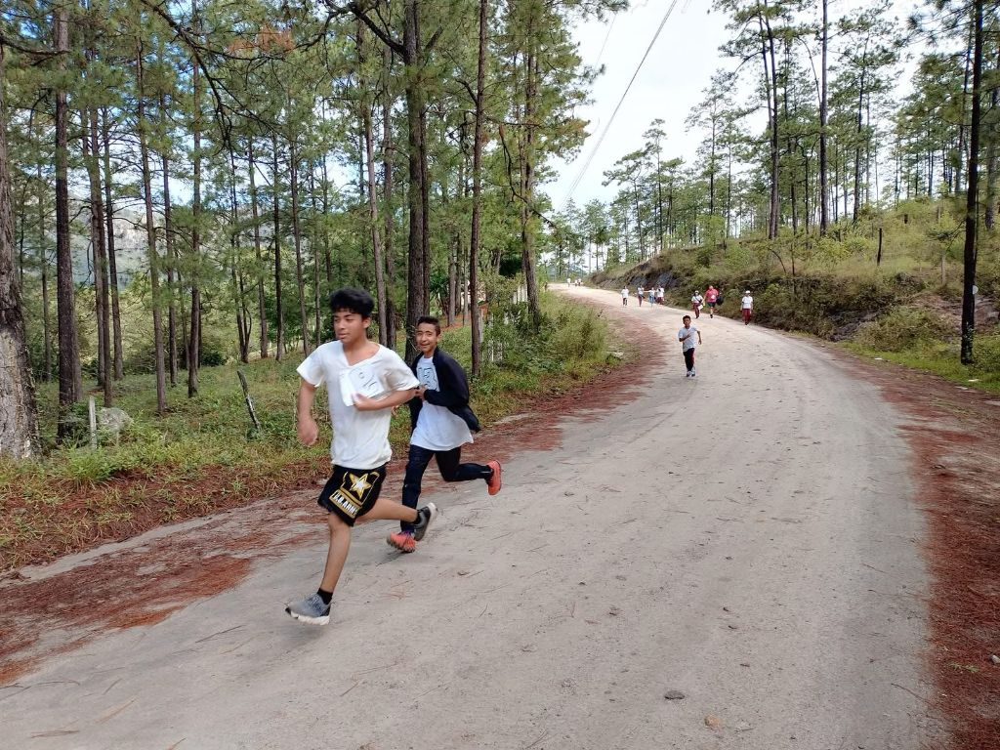
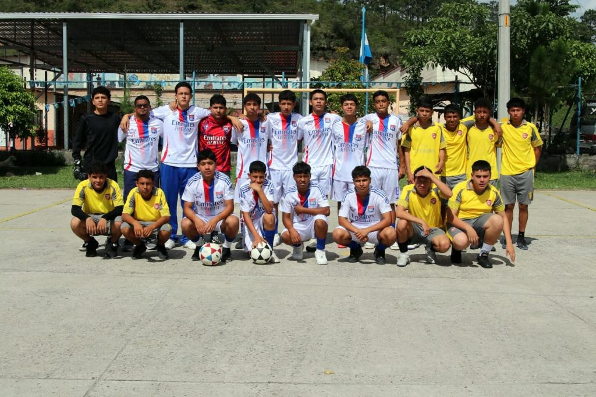
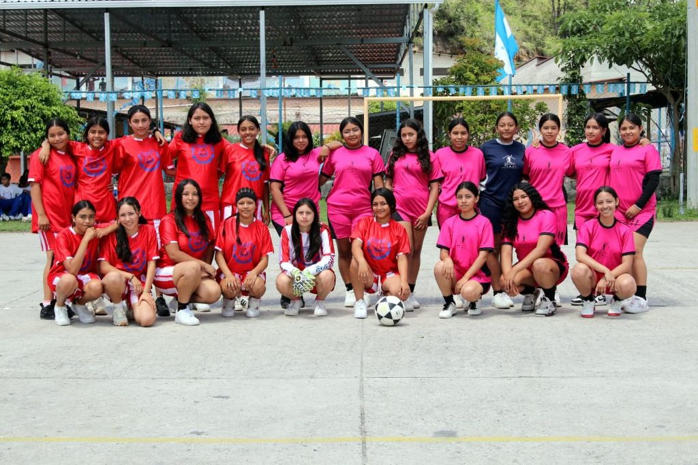
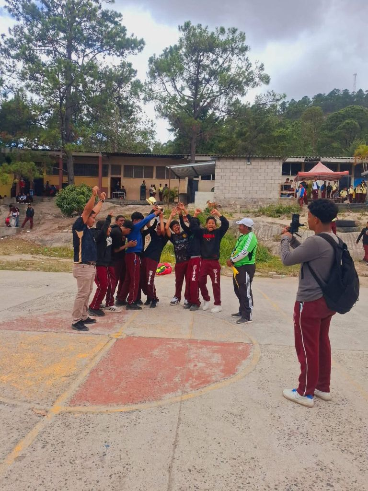
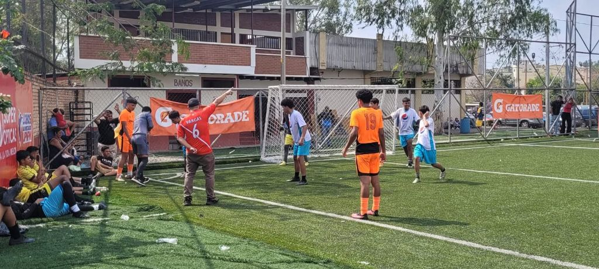
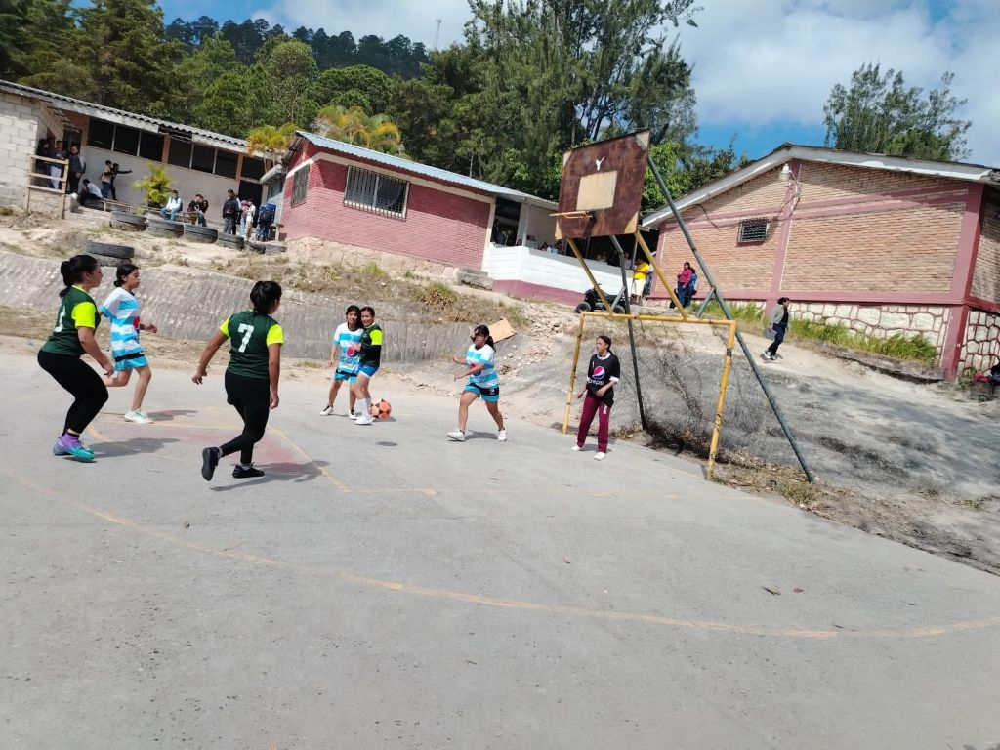
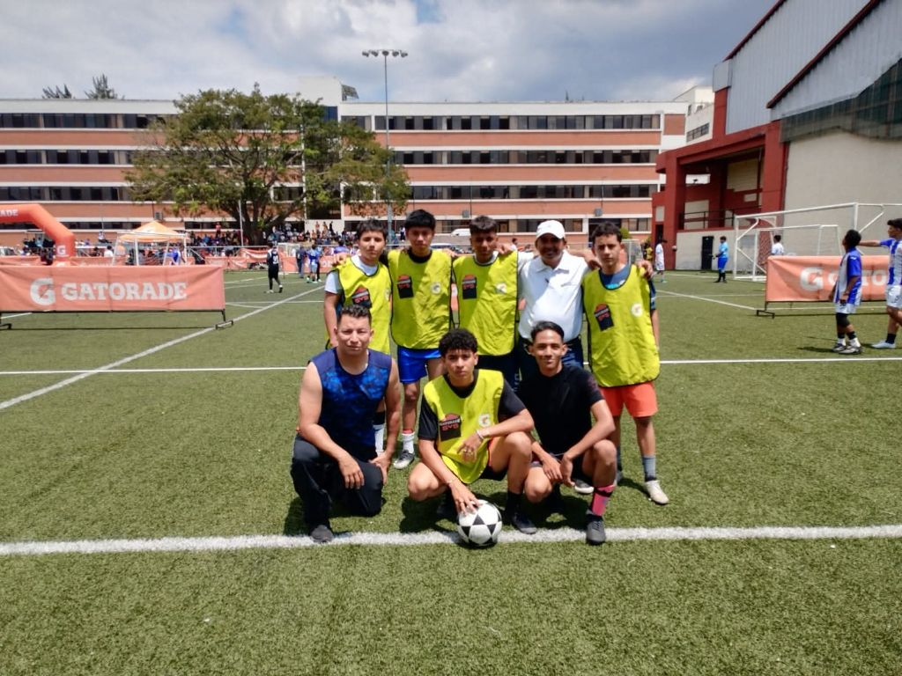
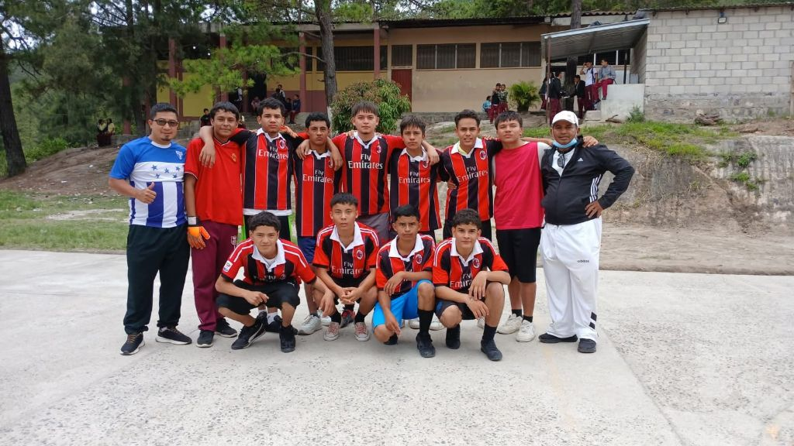
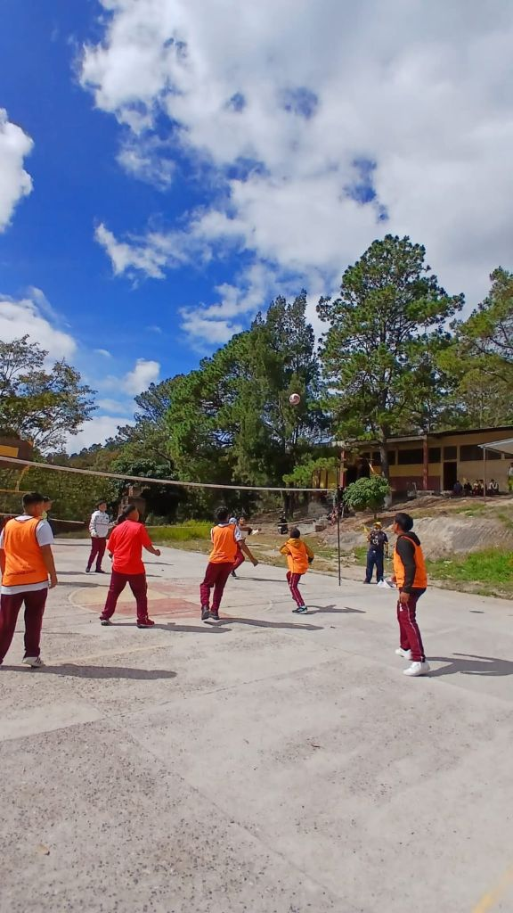

Deportes.
Donde el esfuerzo se entrena, el carácter se forja y cada camiseta representa a todo un instituto.
El deporte es una de las expresiones más vivas de nuestra comunidad educativa: une a estudiantes, docentes y familias en torno a la disciplina, el trabajo en equipo y el orgullo de representar al I.G.T. Francisco Miranda dentro y fuera de las aulas.
El deporte como parte de nuestra formación
En el I.G.T. Francisco Miranda entendemos el deporte como una extensión natural del aula: un espacio donde los estudiantes ponen a prueba su disciplina, su capacidad de trabajar en equipo y su compromiso con algo más grande que ellos mismos. Cada entrenamiento, cada torneo y cada jornada deportiva busca desarrollar valores que acompañan al estudiante mucho más allá de la cancha.
La participación es amplia y voluntaria: estudiantes de distintas secciones y jornadas se integran a equipos representativos o a actividades recreativas según su interés, siempre bajo la guía de docentes y entrenadores comprometidos. Por eso el área deportiva forma parte esencial de la formación integral que promueve la institución.

Estadísticas Deportivas
Cifras referenciales del prototipo, pensadas para dar una idea del alcance del área deportiva institucional.
* Cifras hipotéticas para fines de prototipo, no representan datos oficiales del instituto.
Historia del área deportiva
Un recorrido hipotético que ilustra cómo pudo evolucionar el deporte institucional a lo largo de los años.
Creación del programa deportivo
Un grupo de docentes organiza las primeras jornadas de fútbol y atletismo como actividad extracurricular.
Formación de equipos representativos
Nace el primer equipo de fútbol masculino que representa oficialmente al instituto en encuentros locales.
Incorporación de baloncesto y voleibol
Se habilita la cancha multiusos y se suman nuevas disciplinas con participación mixta.
Nace el fútbol femenino institucional
Un grupo de estudiantes impulsa la creación del primer equipo femenino, hoy uno de los más reconocidos.
Participación destacada en torneos regionales
Los equipos del instituto empiezan a competir fuera de Zambrano, dejando en alto el nombre de la institución.
Consolidación del área deportiva
Hoy el área reúne varias disciplinas activas, entrenadores dedicados y una participación estudiantil creciente.
Deportes y disciplinas
Equipos representativos y actividades deportivas formativas para todas las secciones.

Compite en torneosFútbol Masculino
Equipo representativo que compite en torneos intercolegiales e internos, con categorías juvenil y sub-17.
- 9° a 12° grado
- Entrenador: Prof. Manuel Osorto

Compite en torneosFútbol Femenino
Uno de los equipos más queridos de la comunidad, con participación constante en encuentros intercolegiales.
- 8° a 12° grado · Femenino
- Entrenadora: Prof.ª Delmy Cáceres

Compite en torneosVoleibol
Equipos mixtos que entrenan en la cancha multiusos y participan en encuentros internos y amistosos.
- 7° a 11° grado · Mixto
- Entrenador: Prof. Selvin Ramírez
Baloncesto
Juegos internos entre secciones que desarrollan agilidad, estrategia y trabajo en equipo.
Encargado: Prof. Danilo Reyes
Atletismo y Campo Traviesa
Carreras de resistencia y pruebas de pista que se realizan en los caminos aledaños al instituto.
Encargado: Prof. Óscar Villeda
Ajedrez
Club deportivo-formativo que participa en encuentros internos durante los recreos y horas libres.
Encargada: Prof.ª Karen Zelaya
Tenis de Mesa
Actividad recreativa muy popular entre estudiantes, con torneos internos cada semestre.
Encargado: Prof. Elmer Padilla
Instalaciones deportivas
Los espacios donde entrenan y compiten nuestros equipos representativos.

Cancha de Fútbol
Superficie de grama sintética utilizada para entrenamientos y torneos intercolegiales.
Fútbol · Encuentros oficiales

Cancha Multiusos
Espacio versátil donde se practican fútbol sala, baloncesto y voleibol según el horario.
Fútbol sala · Baloncesto · Voleibol
Ruta de Atletismo
Camino natural en los alrededores del instituto, utilizado para carreras y entrenamiento de resistencia.
Atletismo · Campo traviesa
Área Recreativa
Espacios techados usados para ajedrez, tenis de mesa y actividades bajo techo en días de lluvia.
Ajedrez · Tenis de mesa
Área de Entrenamiento
Zona destinada al acondicionamiento físico previo a torneos y jornadas deportivas.
Preparación física general
Actividades y proyectos
Jornadas y torneos que dinamizan el calendario deportivo institucional.
Torneo Intercolegial de Fútbol
Encuentro entre institutos de la zona, disputado en la cancha sintética del instituto.
- Marzo 2026 · Cancha de Fútbol
- Categoría juvenil masculina
- Resultado: 3er lugar
Encuentro Amistoso Femenino
Partido de preparación entre secciones para definir la base del equipo representativo.
- Abril 2026 · Cancha Multiusos
- Categoría juvenil femenina
- Resultado: Empate 2-2

Copa Institucional
Torneo por eliminación directa entre las secciones del instituto, uno de los eventos más esperados del año.
- Mayo 2026 · Cancha de Fútbol
- Todas las secciones
- Resultado: Campeón 9° "B"

Festival Deportivo de Fin de Semestre
Jornada recreativa con múltiples disciplinas, pensada para cerrar el semestre con toda la comunidad estudiantil.
- Noviembre 2026 · Todas las instalaciones
- Toda la comunidad estudiantil
Calendario deportivo
Todas las fechas son ficticias y sirven únicamente como referencia para este prototipo.
Próximamente
Eventos realizados
Galería multimedia
Partidos, entrenamientos, torneos y celebraciones que reflejan la vida deportiva del instituto.
 Premiaciones
Premiaciones

ActividadesPróximamente incorporaremos videos de partidos y jornadas destacadas en esta sección.
Beneficios e impacto
El deporte deja huella mucho más allá del marcador.
Salud
Promueve la actividad física y hábitos saludables desde temprana edad.
Disciplina
Fortalece la constancia, la responsabilidad y el compromiso con los horarios de entrenamiento.
Trabajo en equipo
Desarrolla cooperación, comunicación y respeto por el rol de cada compañero.
Liderazgo
Ayuda a desarrollar iniciativa, toma de decisiones y capacidad de motivar a otros.
Convivencia
Favorece la integración entre secciones, grados y jornadas del instituto.
Bienestar
Contribuye al equilibrio físico y emocional de los estudiantes fuera del aula.
Nuestros logros
Reconocimientos hipotéticos que ilustran el tipo de trayectoria que el área deportiva busca construir.
Campeones de la Copa Institucional
Categoría juvenil masculina · 9° "B"
Subcampeonas intercolegiales
Categoría juvenil femenina
Participación destacada regional
Carrera de campo traviesa municipal
Primer lugar campeonato interno
Categoría mixta
Testimonios
Lo que el deporte representa para quienes lo viven día a día.
"Representar al instituto me enseñó que el esfuerzo de todo el equipo vale más que el esfuerzo individual."
"Jugar en el equipo femenino me dio confianza para hablar en público y liderar dentro y fuera de la cancha."
"Los estudiantes que participan en deportes suelen mostrar mayor disciplina también en el aula. Es una inversión que vale la pena."
"Cada torneo es una oportunidad para que los muchachos entiendan que perder también enseña, si se hace con actitud."
Equipo deportivo
Docentes y entrenadores que impulsan la formación deportiva del instituto.

Santiago Humberto Fúnez Zúñiga
Coordinador DeportivoImpulsa con dedicación la organización y supervisión de las actividades deportivas del instituto.
Manuel Osorto
Entrenador de Fútbol MasculinoDirige la preparación técnica y física del equipo representativo masculino.
Delmy Cáceres
Entrenadora de Fútbol FemeninoAcompaña el crecimiento deportivo y personal de las estudiantes del equipo femenino.
Selvin Ramírez
Encargado de Voleibol y BaloncestoCoordina los espacios de la cancha multiusos y las actividades recreativas mixtas.
"El deporte nos une, nos fortalece y nos prepara para el futuro."
Súmate a la vida deportiva del I.G.T. Francisco Miranda: cada estudiante tiene un lugar en la cancha.
Conoce nuestras actividades deportivas